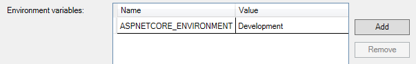
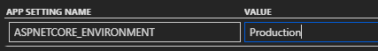

Setting Environment for EF Core Data Migrations
Most of my side project work is in ASP.NET Core lately, and my main side project uses EF Core for data access with data migrations. My application is deployed in Azure using Azure SQL as the database. When developing and running locally, I hit a LocalDB instance on my machine.
When I need to make changes to the data model, I make the code changes, run Add-Migration Update### and then Update-Database in package manager console, and my local database happily gets updated. But when I’m ready to make the changes to the SQL Azure database, how can I change the connection string that the EF database context is using?
The ASPNETCORE_ENVIRONMENT Variable
First let’s talk about how an ASP.NET Core application knows where it’s running.
ASP.NET Core uses an environment variable named ASPNETCORE_ENVIRONMENT to control how an application behaves in different environments. The framework supports three environment values out of the box: Development, Staging, and Production. When running locally, my app uses the environment variable set up for me by Visual Studio when I created the project on the Debug tab of my project’s properties:

The ASPNETCORE_ENVIRONMENT variable in project properties.
On the Application settings tab for my App Service in Azure, this variable is defined and set to Production so the deployed instance of my application knows to use production settings and connection strings:

The value of this environment variable can be accessed from within the Startup class by using a constructor that takes an instance of IHostingEnvironment:
public Startup(IConfiguration configuration, IHostingEnvironment environment)
You can then use convenience members, like environment.IsDevelopment or environment.IsProduction to switch based on the predefined environments, or access environment.EnvironmentName directly.
ASP.NET Core also supports the use of different appsettings.json files, depending on the value of the ASPNETCORE_ENVIRONMENT environment variable. For example, I have an appsettings.Development.json in my project with overrides for settings and connection strings specific to my development environment. When loading configuration options on startup, the framework knows to look for and use any settings defined in an appsettings.{EnvironmentName}.json file, where {EnvironmentName} matches the value of the ASPNETCORE_ENVIRONMENT environment variable.
Setting ASPNETCORE_ENVIRONMENT for Data Migrations
All of this is prelude to the point of this post. I’ve never really used package manager console for much more than, well, managing Nuget packages and running the occasional data migration commands. But as it turns out, the Package Manager Console window is a PowerShell shell that can do much more. For now, I just need it to help me target the correct database when running my data migrations.
I can see a list of my application’s DbContext types and where they’re pointing by issuing EF Core Tools command Get-DbContext in package manager console. Doing so yields the following output:
PM> Get-DbContext
Microsoft.EntityFrameworkCore.Infrastructure[10403]
Entity Framework Core 2.2.1-servicing-10028 initialized 'ApplicationDbContext' using provider 'Microsoft.EntityFrameworkCore.SqlServer' with options: None
providerName databaseName dataSource options
------------ ------------ ---------- -------
Microsoft.EntityFrameworkCore.SqlServer mydatabase (localdb)\MSSQLLocalDB None
I can then set the ASPNETCORE_ENVIRONMENT variable to Production for the context of the package manager window only by issuing the following command:
PM> $Env:ASPNETCORE_ENVIRONMENT = "Production"
All subsequent calls to Update-Database will be now run against the database configured for my Production environment. I can double-check to make sure, though, by issuing Get-DbContext again. This time it shows that I’m pointing to my deployed database:
PM> Get-DbContext
providerName databaseName dataSource options
------------ ------------ ---------- -------
Microsoft.EntityFrameworkCore.SqlServer mydatabase tcp:acme.database.windows.net,1433 None
Thanks for reading!
–Jon